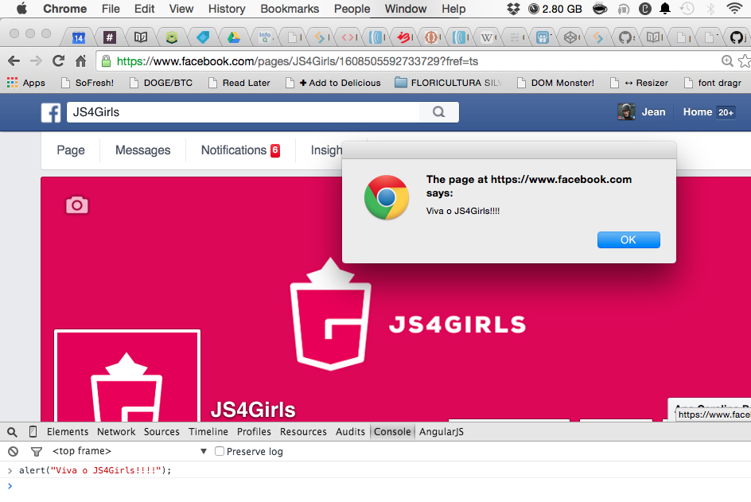
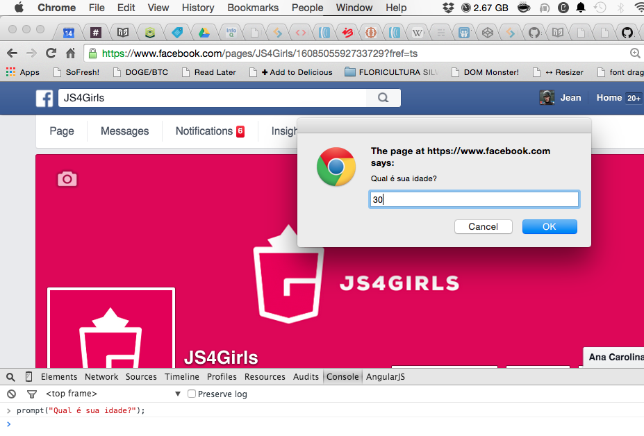

JavaScript foi originalmente desenvolvido por Brendan Eich da Netscape sob o nome de Mocha, posteriormente teve seu nome mudado para LiveScript e por fim JavaScript. LiveScript foi o nome oficial da linguagem quando foi lançada pela primeira vez na versão beta do navegador Netscape 2.0 em setembro de 1995, mas teve seu nome mudado em um anúncio conjunto com a Sun Microsystems em dezembro de 1995 quando foi implementado no navegador Netscape versão 2.0B3. A mudança de nome de LiveScript para JavaScript coincidiu com a época em que a Netscape adicionou suporte à tecnologia Java em seu navegador (Applets). A escolha final do nome causou confusão dando a impressão de que a linguagem foi baseada em java, sendo que tal escolha foi caracterizada por muitos como uma estratégia de marketing da Netscape para aproveitar a popularidade do recém-lançado Java. JavaScript rapidamente adquiriu ampla aceitação como linguagem de script client-side de páginas web. Como consequência, a Microsoft desenvolveu um dialeto compatível com o próprio JavaScript, mas que levou o nome de JScript para evitar problemas de trademark. JScript foi incluído no Internet Explorer 3.0, liberado em Agosto de 1996. Em novembro de 1996 a Netscape anunciou que tinha submetido o JavaScript para Ecma internacional como candidato a padrão industrial e o trabalho subsequente resultou na versão padronizada chamada ECMAScript. O JavaScript tem se transformado na linguagem de programação mais popular da web. Inicialmente muitos profissionais denegriram a linguagem, pois a mesma tinha como alvo principal o público leigo. Com o advento do Ajax, o JavaScript teve sua popularidade de volta e recebeu mais atenção profissional. O resultado foi a proliferação de frameworks e bibliotecas, práticas de programação melhoradas e o aumento no uso do JavaScript fora do ambiente de navegadores bem como o uso de plataformas de JavaScript server-side.
Inicialmente o Javascript era utilizado apenas nos navegadores, porém hoje em dia com a evolução das engines de Javascript como SpiderMonkey e V8, eles levaram o Javascript também para o lado do servidor com o Node.js e bancos NoSQL que utilizam Javascript como CouchDb e MongoDb.
O JavaScript além de ser a linguagem mais usada no Universo nos oferece algumas coisas interessantes que sem elas a Internet como existe hoje não seria possível:
Atualmente o JavaScript é o motor da Internet, principalmente com o advento do AJAX que fez nossas interfaces ficarem mais ricas e interativas. Caso você não saiba o Facebook só existe do jeito como é graças a ele.
JavaScript suporta elementos de sintaxe de programação estruturada da linguagem C (por exemplo, if,while, switch). Uma exceção é a questão do escopo: o escopo em blocos ao estilo do C não é suportado, em seu lugar o JavaScript utiliza as funções como delimitadores de escopo. Assim como C, JavaScript faz distinção entre expressões e comandos(statement). Uma diferença sintática do C é que a quebra de linha termina automaticamente o comando, sendo muitas vezes o ponto-e-vírgula opcional ao fim do comando. Funções aninhadas Funções 'internas' ou 'aninhadas' são funções definidas dentro de outras funções. São criadas cada vez que a função que as contém (externa) é chamada. Além disso, o escopo da função externa, incluindo constantes, variáveis locais e valores de argumento, se transforma parte do estado interno de cada objeto criado a partir da função interna, mesmo depois que a execução da função interna é concluída.
Como na maioria das linguagens de script, tipos são associados com valores, não com variáveis. Por exemplo, uma variável x poderia ser associada a um número e mais tarde associada a uma string. Isso permite que o JavaScript suporte várias formas de testar o tipo de um objeto, incluindo o duck typing. JavaScript inclui a função eval que consegue executar em tempo de execução expressões e comandos da linguagem que estejam escritos na string passada como argumento.
Funções de primeira classe No JavaScript as funções são de primeira classe, isto é, são objetos que possuem propriedades e métodos, podem ser passados como argumentos, podem ter suas referências armazenadas em variáveis e retornados como qualquer outro objeto. Funções anonimas São funções, como o próprio nome ja diz, que não possuem nome, são normalmente criadas apenas para uma finalidade e muito utilizadas em callbacks.
JavaScript é quase inteiramente baseada em objetos. Objetos JavaScript são arrays associativos, que também respondem aos mapeamentos de seus protótipos, algo similar à ideia de herança entre classes, porém baseada em protótipos. Os nomes das propriedades de um objeto são strings, o que permite o acesso por duas possibilidades de sintaxe. Por exemplo: obj.x = 10 e obj["x"] =10 são equivalentes, o ponto neste exemplo é apenas açúcar sintático. Propriedades e seus valores podem ser adicionadas, mudadas, ou deletadas em tempo de execução. A maioria das propriedades de um objeto (e aqueles em sua cadeia de herança via protótipo) pode ser enumerada usando-se uma estrutura de repetição for...in. Javascript possui um pequeno número de objetos padrão da linguagem como window e document.
JavaScript usa protótipos em vez de classes para o mecanismo herança. É possível simular muitas características de orientação a objetos baseada em classes com protótipos. Funções e métodos Diferente de muitas linguagens orientadas a objetos, não há distinção entre a definição de uma função e a definição de um método no JavaScript. A distinção ocorre durante a chamada da função; a função pode ser chamada como um método. Quando uma função é chamada como método de um objeto, a keywordthis da função é associada àquele objeto via tal invocação.
O JavaScript é case sensitive, ou seja, tem diferenciação entre maiúsculas e minúsculas, portanto cuidado ao nomear suas variáveis e funções.
O uso do ponto e vírgula (;) no final do comando é facultativo, porém as boas práticas nos dizem para SEMPRE usar, ok?!
Para fazermos um comentário de linha basta adicionar // no inicio do comentário. Exemplo:
var nome = "Suissa"; //meu nome
E para fazer um comentário de bloco deve-se iniciar com /* e finalizar com */. Exemplo:
/*
@author: Suissa
@curso: JS4Girls
*/
Por que um tópico para explicar isso?
Porque a maioria das pessoas que não programa sempre faz confusão, porém as 2, apesar do nome, são quase o oposto. É como dizem:
Java está para o Javascript assim como Bola está para Bolacha.
Mas qual são as principais diferenças entre eles?
Isso só para citar as maiores diferenças, sem contar a sintaxe.
Agora abra o console do seu navegador, (pedir ajuda ao colega ou professor), e digite o seguinte comando:
alert("Hello JS4Girls!");
E execute apertando ENTER.
Provavelmente deve ser a primeira vez que você tem contato com esse tal de console correto?
Certo.
Bom o console, que existe também em todos os outros navegadores importantes do mercado, é a interface onde podemos rodar comandos de JavaScript diretamente do seu navegador.
Você deve ter percebido que o comando alert faz abrir uma caixinha de alerta na minha tela correto?

Sim eu posso executar comandos diretamente em algum site aberto podendo modificar dinamicamente qualquer parte do mesmo, porém essa modificação só será vista por você na sua máquina e quando recarregar a página aquele seu código terá ido embora. Logo não é uma ferramenta para você zoar com outros sites, mas sim conseguir trabalhar de uma forma mais eficaz com o JavaScript.
Agora vamos conhecer mais uma função bem simples do JavaScript que faz abrir uma caixa de diálogo com um campo para entrada de algum valor.
Vamos rodar o seguinte código no nosso console:
prompt("Qual é sua idade?");

Você deve se perguntar:
- Mas para onde vai esse valor da idade?
Ótima pergunta minha cara aluna, nesse código que rodamos ele não vai para lugar algum, então vamos corrigir isso definindo que o valor desse prompt vá para minha variável idade e depois eu mostre esse valor com alert.
var idade = prompt("Qual é sua idade?");
alert("Minha idade é " + idade + " anos." );
Bem simples não? Agora de mãos desse conhecimento vamos resolver o exercício abaixo.
Escreva um código em que você receba seu nome e depois escreva com alert a mensagem: "Meu nome é " + nome e mostre-o na tela!